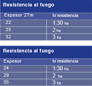
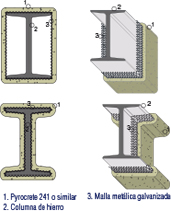
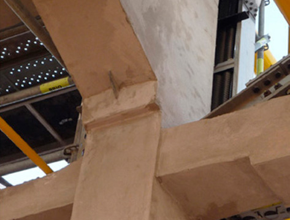

Fireproofing Folleto Digital
Sistema de protección contra fuego
Cumple con la especificación UL1709 (1100 Cº) para diferentes resistencias al fuego de 1 a 3 hs Material utilizado tipo Carboline Pyrocrete 241 o similar
Aplicación en plantas de gas y petroquímicas
Sobre estructura metálica con inclusión de un refuerzo de malla metalica galvanizada mediante sistema de proyección/ manual, se coloca el material Pyrocrete 241
Aplicación en construcción civil
Como la temperatura de fuego es menor a 800ºC. se usa el mismo producto o en base de lana mineral y cemento aplicado en la superficie. 
